Native 深读：为什么 3D 生成需要“原生而紧凑”的结构化 latent？
核心问题。如果 image-to-3D 已经可以生成看起来不错的物体，为什么还要重新设计 3D latent？Native 这篇论文的回答是：瓶颈不只是生成器，而是现有表示没有足够“原生”地保留 mesh 的拓扑、开放面、内部结构与 PBR 材质，同时又没有足够“紧凑”地让大模型高效学习。它提出 O-Voxel 与 Sparse Compression VAE，把原始 3D 资产先转成可双向转换、可压缩、可生成的结构化 latent，再在这个 latent 上训练大规模 flow-matching 模型。
先看 teaser：这篇论文要回答什么？
图 1 把三件事放在同一张图里：高分辨率重建、完整 PBR 纹理生成，以及“更少 token 却更高保真”的 compactness 对比。读者要重点看右下角：这不是单纯把分辨率拉到 $1536^3$，而是在问什么样的 3D latent 才能同时支持细节、材质和可扩展生成。
问：为什么 teaser 不先展示一个新模型结构，而先展示重建、生成、token 数？
答：因为论文的主张是表示层面的：如果 latent 本身丢掉开放面、内表面或材质属性，后面的 flow 模型再大也只能学习一个被简化过的 3D 世界。

1. 研究动机：3D 生成真正缺的是“模型”，还是“表示”？
Native 把问题落在 3D 表示上。论文认为，常见 iso-surface field 路线，例如 SDF 或 Flexicubes，往往假设较规整的封闭表面，因而在开放面、非流形结构、完全包裹的内部结构上容易受限；同时，许多 3D 生成 pipeline 只把纹理当成 RGB 贴图，而没有把 metallic、roughness、opacity 等 PBR 属性作为原生信号建模。
继续追问：为什么这会影响生成？
引导：生成器学习的是 latent 分布。如果 3D asset 在进入 latent 前已经被投影成“封闭、外表面、RGB-only”的近似，那么模型学到的就不是原始资产分布，而是一个被表示系统改写过的分布。
Takeaway：Native 的新意不是只加大 DiT，而是先定义一个能保留原始 mesh 复杂性的中间世界。
2. 贡献拆解：作者明确提出了什么？
| 层次 | 作者明确贡献 | 它解决的瓶颈 | 正文证据 |
|---|---|---|---|
| 表示 | O-Voxel：field-free sparse voxel structure，编码几何与 PBR 材质 | 开放面、非流形、内部表面与材质属性难以同时保留 | 图 3、公式 1、公式 3 |
| 压缩 | Sparse Compression VAE，把 O-Voxel 压成 compact SLat | 高分辨率 3D 资产 token 数过大，难以被大模型生成 | 图 4、表 1、表 3 |
| 生成 | 约 4B 参数的多阶段 flow-matching 3D 生成模型 | 结构、几何、材质联合生成难以稳定扩展 | 图 2、表 2、图 5–7 |
| 启发 | 读者推断：3D scaling 顺序应是表示质量 → latent 压缩 → 生成器容量 | 避免直接堆模型而忽略数据/表示失真 | 由 pipeline 与 ablation 共同支持；不是作者单独定理 |
3. 数据集与任务：模型到底学习哪些 3D 资产？
论文训练在开放 3D 资产之上，补充材料给出了更细的数据构成：TexVerse、Objaverse-XL 的 Sketchfab/GitHub 子集、ABO、HSSD，以及 Toys4K 评测集。关键不是“用了很多数据”，而是根据任务分出 shape training set 与 material training set；材质 VAE 还需要标准 metallic-roughness PBR workflow，因此会过滤掉不符合材质格式的资产。
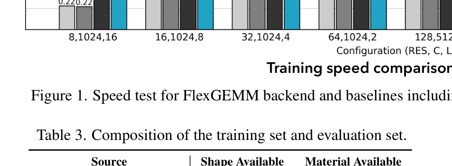
| 数据 | 作用 | 输入 → 输出 | 论文未说明/边界 |
|---|---|---|---|
| TexVerse / Objaverse-XL / ABO / HSSD | 训练 SC-VAE 与生成模型 | Textured mesh → O-Voxel → SLat | 各数据源许可与完整清洗规则未在正文逐项展开 |
| 渲染图像 | image-to-3D 条件训练 | 多视角 RGB prompt → 结构/几何/材质 latent | 完整渲染随机种子与全部相机分布论文未说明 |
| Toys4K / curated Sketchfab | 重建评测 | mesh → O-Voxel/重建 mesh → 距离与 normal 指标 | 人工筛选的 curated test set 细则有限 |
4. Pipeline：从原始 3D asset 到可生成 SLat
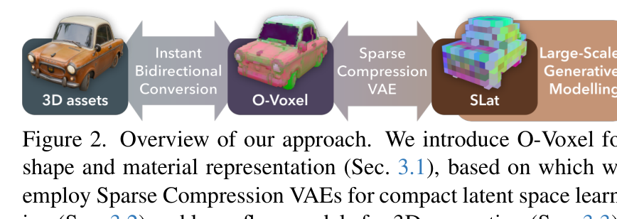
问：为什么 pipeline 不直接从图像生成 mesh？
答：直接生成 mesh 要同时处理拓扑、顶点数量、材质、UV/属性绑定等离散结构。Native 先把 mesh 变成稀疏 voxel 上的局部几何与材质 token，再让 flow 模型在这个结构化 latent 上学习，降低生成器面对的离散复杂度。
Takeaway：O-Voxel 是“mesh 与生成模型之间的协议层”，SC-VAE 是“协议层到紧凑 latent 的压缩器”。
5. 方法一：O-Voxel 如何同时保留形状与材质？
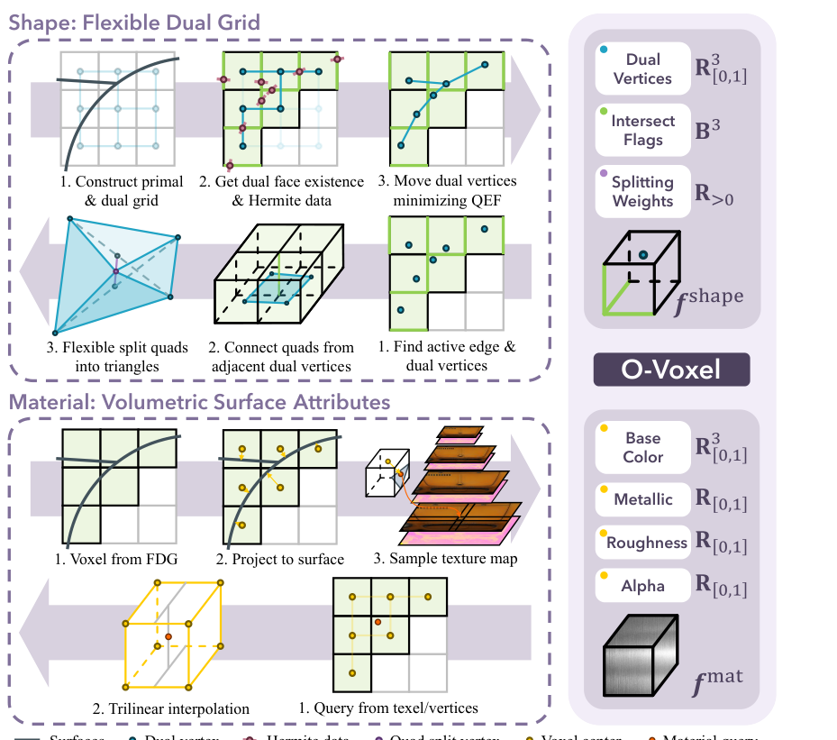
公式读法
$p_i$ 是 active voxel 的三维坐标，$f_i^{\mathrm{shape}}$ 存局部几何，$f_i^{\mathrm{mat}}$ 存材质属性。这个式子强调：几何与材质并不是两个互不相干的后处理结果，而是绑定在同一稀疏空间结构上。
形状转换时，论文使用 QEF 求解每个局部 dual vertex，同时加入边界项来处理开放面。这个设计很关键：开放面不是“封闭网格的失败情况”，而是许多真实 3D asset 的原生拓扑。
公式读法
第一项让顶点贴近局部切平面，boundary 项改善开放边界，regularization 项避免局部求解不稳定。去掉边界项，开放薄面和非闭合结构会更容易被错误封闭或折叠。
其中 $c_i$、$m_i$、$r_i$、$\alpha_i$ 分别表示 base color、metallic、roughness 与 opacity。论文真正想保留的不是“看起来有颜色”，而是渲染管线可用的表面属性。
6. 方法二：SC-VAE 为什么是压缩器，不只是 autoencoder？
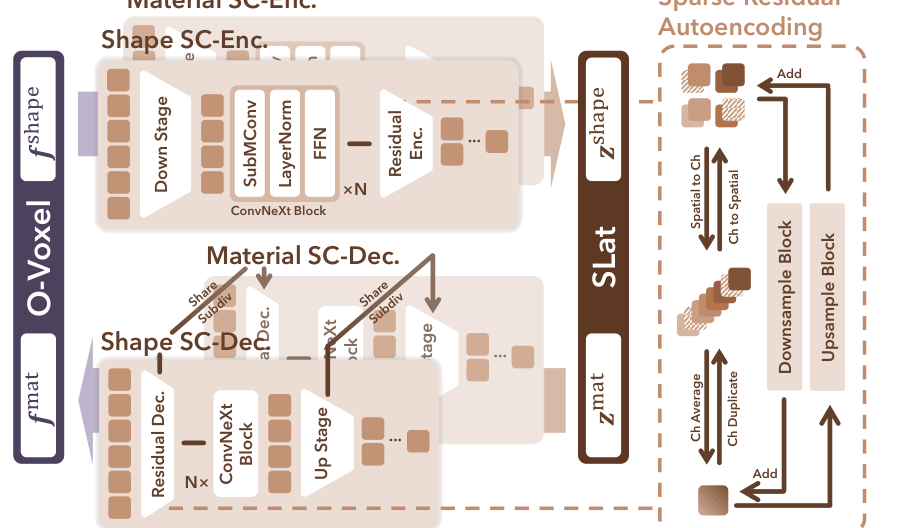
为什么这是“压缩器”：KL 项就是 rate
普通 autoencoder 只压重建误差，没有任何力量逼 latent 变小或变规整。式 4 的关键是 $\lambda_{\mathrm{KL}}\mathcal{L}_{\mathrm{KL}}$ 这一项：VAE 的 KL 正则本质上就是变分信息瓶颈（VIB）里的 rate 项，把后验拉向先验、上界化 latent 携带的信息量（苏剑林对此有系统推导 [archives/6181]、[archives/5253]）。于是式 4 可以读成一个有损压缩目标——重建项（顶点 $\ell_2$、占据/符号 BCE、材质 $\ell_1$）是 distortion，KL 是 rate，最小化 distortion $+\lambda\cdot$rate 正是“在有限比特预算下只编码对重建重要的信息”。稀疏（只有 active voxel 带 latent）、残差 AE 与 early-pruning upsampler 进一步压低 rate 又保住局部细节；式 5 的 render loss 则把 distortion 的度量从原始 PBR 数值换到渲染空间。承重假设：$\lambda_{\mathrm{KL}}$ 要调得当——太大则后验坍缩、丢几何/材质细节，太小则 latent 太大太散、下游 flow 难建模；把 KL 拉向 $\mathcal{N}(0,I)$ 同时也让 latent 足够平滑，好对上 flow matching 的噪声端点。这条“压缩器”主张能从两侧独立验证：重建侧看高压缩比下的重建保真，生成侧看约 4B flow 模型能在 $512^3/1024^3/1536^3$ 上以 3/17/60 秒生成——latent 若不是真的又紧又规整，这两件事不会同时成立。
问：为什么材质 VAE 还要 render loss？
因为 PBR 参数本身的 L1 距离不一定等于最终视觉效果的距离。加入渲染一致性，是把材质 token 拉回“能被真实渲染器看到”的误差空间。
Takeaway：SC-VAE 的目标不是复原一个好看的预览图，而是把 O-Voxel 压成大模型能生成、又能解回 mesh/PBR 的 compact latent。
7. 生成模型：为什么拆成结构、几何、材质三阶段？
Native 在 SLat 上训练 flow-matching 模型，但它不是一个单阶段“图像 → 全部 latent”的黑箱。论文将生成拆为 sparse structure generation、geometry generation、material generation：先确定哪些稀疏 voxel 活跃，再生成局部几何，最后生成与形状对齐的 PBR material。这样做的直觉是：结构决定可见空间布局，几何决定局部表面，材质依赖已有表面。
公式读法
这里的写法按补充材料：路径从数据 $x_0$ 插值到噪声 $\epsilon$，目标向量是 $\epsilon-x_0$。不要把它和“噪声到数据”的记号混用；符号方向不同，但核心都是学习一条可积分的向量场。
8. 训练细节与算力账本：哪些信息够复现，哪些还缺？
| 模块 | 论文披露 | 作用 | 缺失信息 |
|---|---|---|---|
| SC-VAE | 16 H100，batch size 128；基于过滤后的开放 3D 资产训练 | 把 O-Voxel 压成 compact SLat | 训练时长、step/epoch、完整 LR schedule 论文未说明 |
| DiT flow 模型 | 约 1.3B 参数/模型，三模型合计约 4B；width 1536、30 blocks、12 heads、MLP 8192；32 H100，batch size 256；AdamW，LR $10^{-4}$，weight decay 0.01，CFG drop 0.1 | 结构、几何、材质三阶段生成 | 总训练小时、采样步数、混合精度策略论文未说明 |
| 推理速度 | 论文报告 $512^3$、$1024^3$、$1536^3$ 生成大约 3s、17s、60s；teaser 标注 $1536^3$ 约 35s shape + 25s texture | 证明 compact latent 支持高分辨率推理 | 不同硬件表述中出现 H100/A100 场景，实际部署成本需按具体实现复测 |
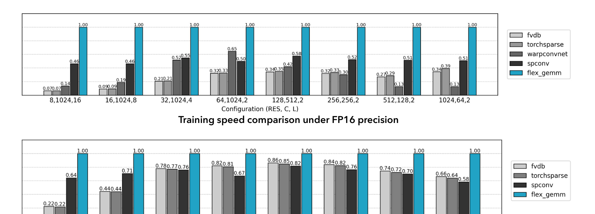
算力说明
这里不做 GPU-hours 估算，因为论文没有同时给出训练时长与完整训练步数。若后续代码或技术报告补充训练天数，才能按披露数字进行粗略估算；否则应写“论文未说明”。
9. 实验结果：这些表是否真的支持论文主张？
9.1 重建：compact latent 是否牺牲 fidelity？
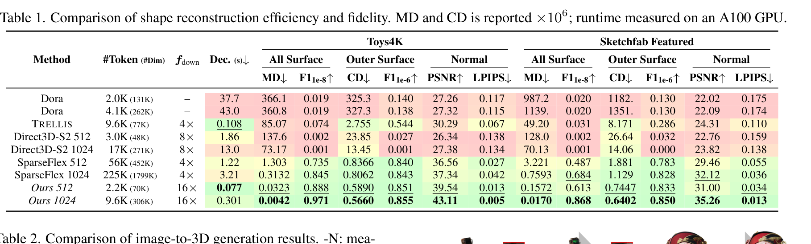
值得谨慎的是，MD/CD/F1 与 normal PSNR/LPIPS 只能覆盖几何距离和法线外观，不等价于完整 DCC pipeline 可用性。论文用 curated Sketchfab 作为更真实测试集，但完整工业资产兼容性仍需额外验证。
9.2 生成：是不是只在指标上好看？
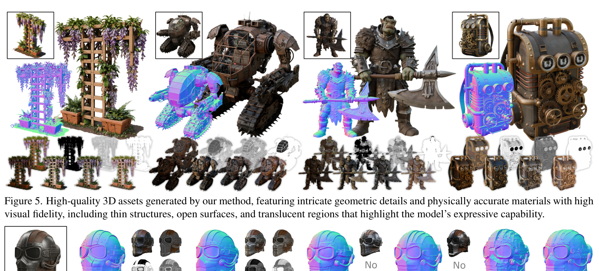
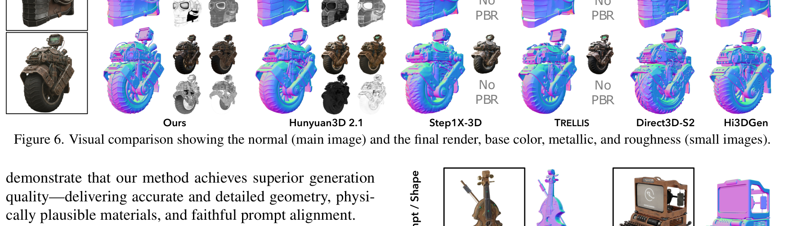
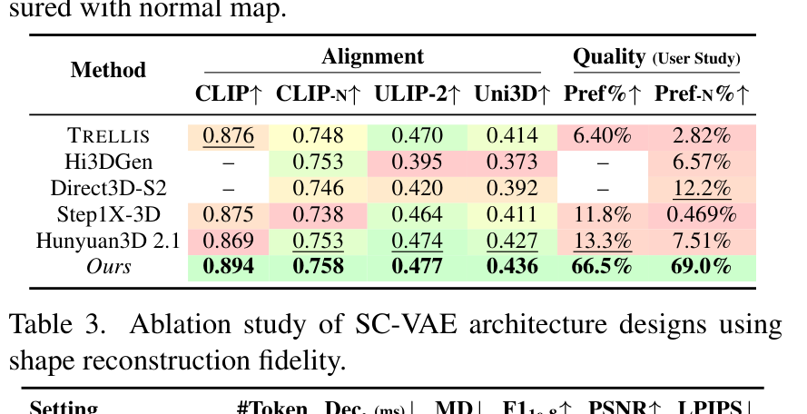
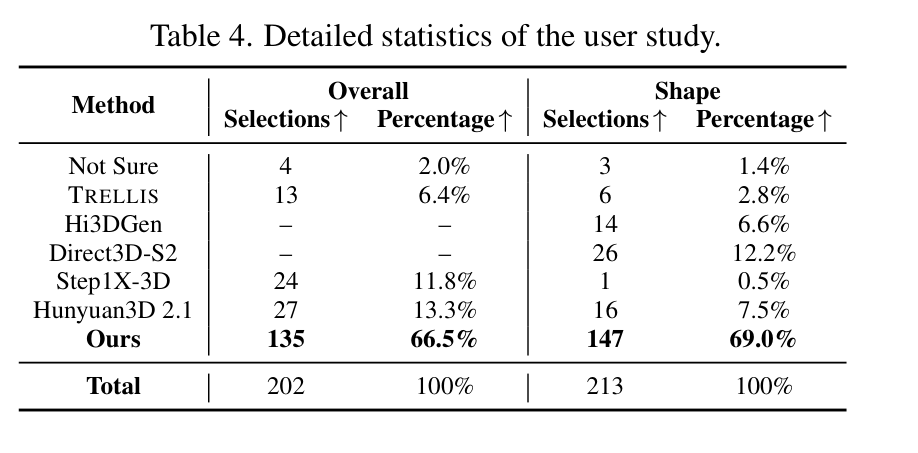
9.3 消融：SC-VAE 的模块是否必要？
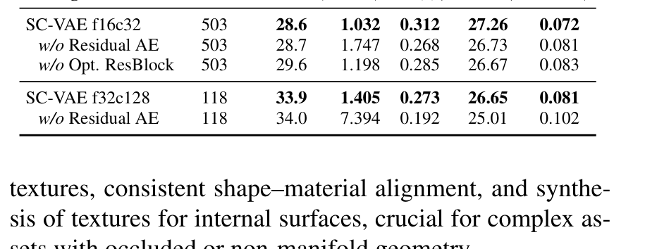
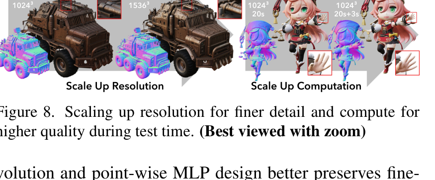
9.4 材质：PBR 是否只是贴图更清晰？
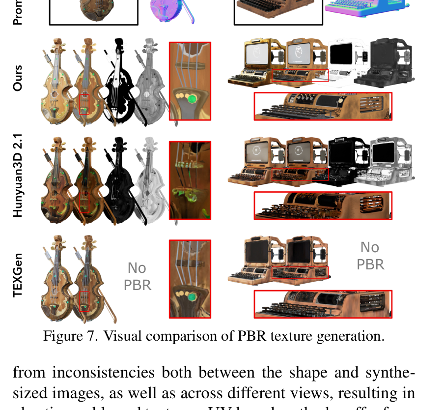
10. 局限与复现门槛：什么时候 Native 仍会失败？
问：O-Voxel 是不是解决了所有拓扑问题？
答：不是。补充材料明确指出，O-Voxel 的表达能力仍受空间分辨率限制；小于 voxel 尺度的细节会 alias，两张非常接近的平行表面落入同一 voxel 时，QEF 顶点可能位于二者之间，材质也会被平均或模糊。
Takeaway：Native 把 3D 表示瓶颈往前推进了一大步，但它仍不是无限分辨率、无限拓扑精度的表示。
| 边界 | 论文/补充材料信息 | 读者应如何解读 |
|---|---|---|
| 分辨率限制 | 小于 voxel 尺度的几何会 alias | 高分辨率推理能缓解，但会增加计算和内存 |
| 近距离平行面 | 同一 voxel 内 QEF 解可能落在两面之间 | 对薄壳、夹层、复杂内部结构仍需额外验证 |
| 小孔与闭合性 | 结果可能包含小 holes，可用 hole filling 修补 | 生成高质量资产不等于直接满足所有 CAD/游戏引擎规范 |
| 语义结构 | 当前 O-Voxel 关注几何与材质，不包含 part graph / semantic structure | 后续若要编辑、装配、物理交互，仍需更高层结构表示 |
| 复现 | 4B 模型、H100 训练、Triton 稀疏算子均有工程门槛 | 论文结论成立，不等于普通实验室可完整复现最大配置 |
结语：几点学术判断
一句话总结：Native 的核心价值是把 3D 生成的 scaling 问题从“生成器够不够大”重新拉回“原始 3D 资产能否被忠实、紧凑、可生成地表示”。O-Voxel 负责保留开放拓扑、内部结构和 PBR 属性，SC-VAE 负责把它压成 compact SLat，flow-matching 模型再在这个 latent 上做结构、几何、材质生成。
- 3D latent 不是中间缓存，而是在定义生成模型能学到的 3D 世界。
- 紧凑性与高保真不是矛盾目标；关键在于压缩前的表示是否保留了正确的局部结构。
- 实验支持 Native 在重建、生成、材质和用户偏好上有明显优势，但复现最大模型与实际资产管线可用性仍需谨慎验证。
资料来源与图像说明
- Jianfeng Xiang et al., Native and Compact Structured Latents for 3D Generation, CVPR 2026 paper / supplementary material.
- CVF Open Access PDF and supplementary PDF；本文所有 Native 图均从论文 PDF 或补充材料以高分辨率 PNG 裁切，存放于
assets/figures/native/。 - 作者主页与 arXiv 条目用于核对题名、作者、摘要与 Best Student Paper 标注；训练与实验数字以论文原文/补充材料为准。